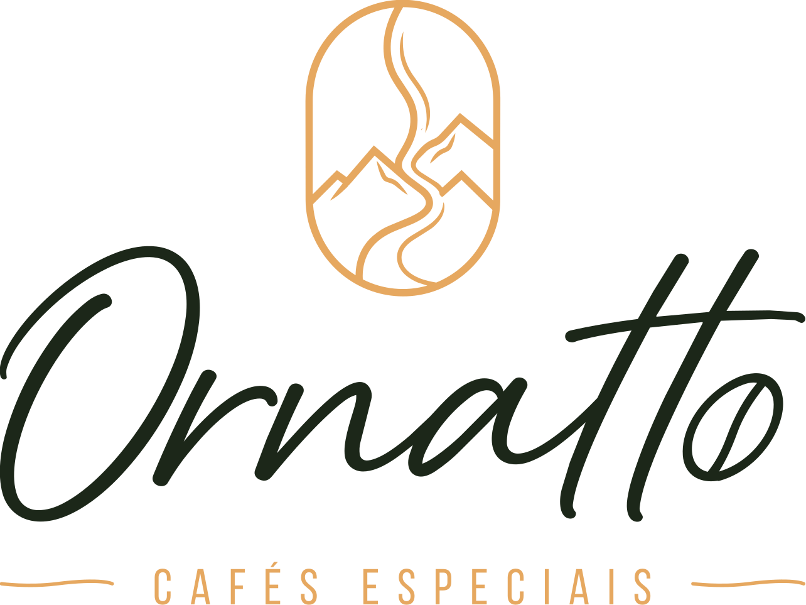

@ornattocafes · 13 carrosséis, 10 reels, 1 sorteio ao vivo e stories todos os dias · horários sugeridos para teste

| Dia | Hora | Formato | Tema · gancho | Status |
|---|---|---|---|---|
| Seg 30 | 12h | Carrossel | Presente de Natal · "O presente de quem sabe a diferença" | Fotos das latas |
| Ter 01 | 19h | Reel ★ | A máquina que expulsa o grão ruim · "Esse grão foi reprovado em milésimos de segundo." | Gravar 27/11 |
| Qua 02 | 12h | Carrossel | Guia de presentes · "Qual café combina com quem você ama?" | Pronto |
| Qua 02 | 19h | Carrossel | Lançamento do sorteio · "O kit do café campeão" | Foto do kit 02/12 |
| Qui 03 | 12h | Reel ★ | O barulho do provador · "Não, ele não está sem educação." | Gravar |
| Sex 04 | 12h | Carrossel | Do cafezal à xícara · "6 etapas que ninguém vê antes da sua xícara" | A produzir |
| Sáb 05 | 19h | Reel ★ | A saca de R$ 50 mil + sorteio · "Essa saca foi vendida por 50 mil reais." | Gravar |
| Dom 06 | Stories | Caixinha "Qual sua maior dúvida sobre café?" |
| Dia | Hora | Formato | Tema · gancho | Status |
|---|---|---|---|---|
| Seg 07 | 19h | Carrossel | Ficha sensorial · "O número que diz se seu café é especial" | A produzir |
| Ter 08 | 12h | Reel | Do grão à xícara · "Nem todo grão chega até aqui." | Pronto |
| Qua 09 | 12h | Carrossel | Tropical da Chapada · "Esse café tem gosto de maracujá. Sério." | A produzir |
| Qui 10 | 12h | Carrossel | Última chamada dos kits · "Hoje é o último dia" | Pronto |
| Qui 10 | 19h | Reel ★ | Gosto de maracujá · "E ninguém colocou maracujá nele." | Gravar |
| Sex 11 | 19h | Carrossel | Quem já está concorrendo · fotos dos participantes do sorteio | A produzir |
| Sáb 12 | 12h | Reel | 3 erros com café em casa · "Você pode estar estragando um café especial." | Gravar |
| Dom 13 | Stories | Quiz "Acima de quantos pontos o café é especial?" |
Semanas 3 e 4
| Dia | Hora | Formato | Tema · gancho | Status |
|---|---|---|---|---|
| Seg 14 | 12h | Carrossel | Para cafeterias · "Sua cafeteria serve café ou serve história?" | A produzir |
| Ter 15 | 19h | Reel | Teste cego · "Dei dois cafés sem dizer qual era qual." | Gravar |
| Qua 16 | 19h | Carrossel | Flor de Laranjeira · "90 pontos. Dá para sentir a flor." | A produzir |
| Qui 17 | 12h | Reel | Mito ou verdade · "Café bem escuro é mais forte?" | Gravar |
| Sex 18 | 12h | Carrossel | Rebenefício · "4 máquinas que reprovam o seu café" | A produzir |
| Sáb 19 | 19h | Reel | O som da torra · "Esse é o som do café ficando pronto." | Gravar |
| Dom 20 | Stories | Respostas da caixinha + "Adicione o seu: #MeuCaféDaCeia" |
| Dia | Hora | Formato | Tema · gancho | Status |
|---|---|---|---|---|
| Seg 21 | 12h | Carrossel | Café da ceia · "O café que vai roubar a cena na ceia" (harmonizações das fichas) + última chamada do sorteio nos stories | A produzir |
| Ter 22 | 19h | Ao vivo | Sorteio ao vivo e anúncio do ganhador | |
| Qua 23 | 19h | Carrossel | Quem faz a Ornatto · "Por trás de cada pacote" (mãos e funções, sem rosto) | A produzir |
| Qui 24 | Stories | Agendado: enquete "Qual café vai na sua ceia?" | ||
| Sex 25 | 10h | Carrossel | Agendado: Feliz Natal · "De nós para você" + aviso do recesso | A produzir |
| Sáb 26 | 19h | Reel | Respondendo comentários · a melhor pergunta em 30 s | Gravar |
| Dom 27 | Stories | Bastidores de 2026 |
O que vale para o mês inteiro